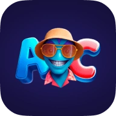
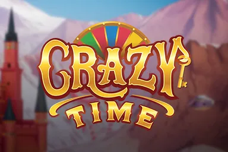

Alf Casino surge como una propuesta disruptiva en el sector del iGaming, fusionando la emoción clásica del azar con la tecnología de vanguardia. En 2026, esta plataforma se ha consolidado como un referente gracias a su capacidad de unir un casino online de primer nivel con una casa de apuestas deportivas ágil y dinámica. El entorno está diseñado para ofrecer una navegación fluida, donde los jugadores pueden saltar de las tragaperras más novedosas a mesas con crupier en vivo con solo un par de clics. La arquitectura del sitio web refleja el futuro del entretenimiento digital, poniendo un énfasis especial en la rapidez de los procesos financieros y en un catálogo que se renueva de forma constante para no dejar espacio al aburrimiento.
Los pilares de la experiencia Alf Casino
Para entender la magnitud de Alf Casino, es necesario echar un vistazo a los datos objetivos que respaldan su fiabilidad y calidad operativa. A continuación, os compartimos los detalles técnicos que definen al operador en el mercado actual:
| Parámetro | Detalle |
|---|---|
| Operador | Alf Casino |
| Lanzamiento | Actualizado a los estándares del año |
| Número de juegos | Más de 3.000 títulos certificados |
| Depósito mínimo | 10 € (general) / 20 € (bono) |
| Máximo de retirada | Hasta 20.000 € mensuales (según nivel VIP) |
| Moneda principal | Euro / EUR / € |
| Soporte técnico | Chat en vivo 24/7 y correo electrónico |
| Movilidad | Aplicación Web Progresiva (PWA) optimizada |
| Bono inicial | 100 % hasta 500 € más 200 tiradas gratis |
Máquinas tragaperras de Alf Casino y sus proveedores de software
La selección de juegos de tragaperras en este operador es de las más completas de la industria, gracias a acuerdos con desarrolladores de primer nivel mundial. Estos proveedores garantizan que cada giro sea auditado y visualmente impactante.
| Proveedor | Por qué destaca | Top 3 juegos |
|---|---|---|
| Play'n GO | Narrativas envolventes y gran RTP | Tome of Madness, Reactoonz 2, Moon Princess |
| Pragmatic Play | Funciones de compra de bono muy potentes | Sugar Rush, Big Bass Bonanza, Gates of Olympus |
| Yggdrasil | Innovación mecánica constante | Raptor Doublemax, Golden Fishtank, Valley of the Gods |
Unid vuestra cuenta a la galaxia de Alf Casino

¡Disfrutad al máximo vuestros títulos favoritos con un rápido acceso! El acceso a este casino online os permitirá el ingreso a la cuenta en pocos minutos. El operador cumple con rigurosos estándares de seguridad en 2026, asegurando que el proceso de apertura de cuenta sea transparente y vuestros datos personales queden totalmente protegidos desde el primer instante.
Para completar vuestro registro con éxito, hay que seguir estos pasos detallados:
- Haced clic en el botón de registro que está resaltado en la interfaz principal del sitio.
- Introducid un correo electrónico y elegid un nombre de usuario único junto a una clave de acceso.
- Indicad vuestra fecha de nacimiento de forma precisa para verificar la edad legal de juego.
- Facilitad vuestra información personal incluyendo nombre, apellidos y género.
- Introducid dirección y código postal para validar la residencia en España.
- Marcad la casilla de aceptación de los términos y condiciones de Alf Casino antes de terminar.
- Pulsad el botón de confirmación final para acceder a la cuenta recién creada y empezar la partida.
Un despliegue de recompensas épico en Alf Casino
El sistema de incentivos de Alf Casino equilibra cantidad y variedad, ofreciendo bonos adaptados tanto para amantes de las tragaperras como para aficionados a los deportes. El paquete de bienvenida combina saldo extra con tiradas gratis, asegurando una entrada potente a su catálogo. Además, destacan opciones específicas para usuarios de criptomonedas y un sistema de cashback especializado para mesas en vivo que mitiga pérdidas, garantizando beneficios constantes durante toda la semana.
| Tipo de bono | Recompensa máxima | Depósito mínimo | Ventaja extra |
|---|---|---|---|
| Paquete de Bienvenida | 100 % hasta 500 € | 20 € | 200 tiradas gratis + 1 Bonus Crab |
| Bono de Deporte | 100 % hasta 100 € | 20 € | Ideal para apuestas reales |
| Bono Crypto | Hasta 3.000 USDT (2.640 €) | 88 € | Cubre los 4 primeros ingresos |
| Reembolso en Vivo | 25 % hasta 200 € | N/A | Recuperación semanal de pérdidas |
Garantía de protección y licencias de Alf Casino
Licencia Curazao
Operación legal y regulada
SSL Encriptado
Protección de datos bancaria
RNG Certificado
Juegos auditados y justos
Alf Casino mantiene estándares rigurosos de equidad y seguridad, operando bajo normativas internacionales. La marca cuenta con una licencia emitida por la jurisdicción de Curazao. Para proteger los datos de los usuarios, el sitio emplea tecnología de cifrado de última generación, evitando accesos no autorizados. La verificación de identidad (KYC) es un componente crucial: antes del primer retiro, los usuarios deben enviar un documento de identidad y una prueba de residencia. Este proceso de verificación busca prevenir fraudes y asegurar que los fondos lleguen a las manos correctas. Los resultados de los juegos se basan en Generadores de Números Aleatorios (RNG), que están certificados por laboratorios independientes, garantizando total transparencia en la experiencia de juego.
| Aspecto | Implementación en Alf Casino | Estándar industrial |
|---|---|---|
| Licencia | Regulado por las autoridades de Curazao | Internacional |
| Seguridad | Cifrado SSL de grado bancario | Alto |
| Verificación | Cumplimiento estricto de normas KYC y AML | Obligatorio |
| Integridad | Auditorías constantes de los juegos RNG | Certificado |
Sección de preguntas frecuentes
¿Qué licencias tiene Alf Casino?
La marca cuenta con una licencia internacional de curazao, lo que garantiza el cumplimiento de las normas de la industria en cuanto a equidad y protección de fondos en euro.
¿Puedo usar mi cuenta para casino y deportes?
Totalmente. Con un único registro en Alf Casino podéis disfrutar de todo el catálogo de juegos de casino y realizar vuestros pronósticos en la sección deportiva.
¿Cuánto tardan en procesarse las retiradas?
Las solicitudes de retiro son procesadas por el departamento financiero en un plazo de hasta 3 días hábiles tras superar el proceso de verificación de vuestra identidad.
¿Cómo funciona el programa vip de Alf Casino?
El programa vip consta de 5 niveles. Los jugadores ascienden según su actividad de apuesta, desbloqueando reembolsos y la atención de un gestor de cuenta personalizado.
¿Es seguro depositar con criptomonedas?
Sí, Alf Casino online utiliza redes seguras para transacciones con criptomonedas, permitiendo que cada depósito sea transparente, rastreable y rápido mediante tecnología blockchain.
Alf Casino España y las apuestas deportivas de élite
Alf Casino España se posiciona como una opción líder y completa para las apuestas deportivas. Su integración de un portal de pronósticos con cuotas competitivas para eventos populares permite que los usuarios gestionen sus apuestas con su cuenta de casino. Se enfatiza el uso de euros para apostar en mercados locales e internacionales con transparencia bajo licencia de Curacao.
Pronósticos en vivo y acción en tiempo real
La sección de casino alf proporciona actualizaciones en tiempo real de las competiciones mediante un panel de datos. Se destaca la amplia cobertura de disciplinas donde el análisis previo y la intuición son cruciales.
| Deporte | Ligas principales | Mercados disponibles | Función especial |
|---|---|---|---|
| Fútbol | La Liga, Champions, Serie A | 1X2, total de goles, hándicap | Pago anticipado (2 goles) |
| Baloncesto | NBA, EuroLeague, ACB | Puntos totales, margen de victoria | Hándicap asiático |
| Tenis | Grand Slams, ATP, WTA | Ganador del set, total de juegos | Apuestas en vivo 24/7 |
| Esports | LoL, CS:GO, Dota 2 | Ganador del mapa, hándicap de rondas | Estadísticas dinámicas |
Funciones avanzadas para vuestros pronósticos
Alf Casino ofrece herramientas profesionales más allá de las cuotas básicas para asegurar el control total sobre cada boleto antes y durante un partido.
- Cash Out/Retiradas: Permite cerrar una apuesta de forma prematura para asegurar ganancias o minimizar pérdidas si el resultado no sigue el plan.
- Bet Builder: Permite combinar múltiples mercados del mismo partido en una única apuesta personalizada.
- Early Payout: Declara automáticamente una apuesta como ganadora si vuestro equipo de fútbol toma una ventaja de dos goles en cualquier momento.
- Virtual Sports: Proporciona acceso a una amplia variedad de deportes virtuales, como fútbol o carreras de caballos, con resultados inmediatos cuando no hay partidos reales disponibles.
El ecosistema de recompensas infinitas
La experiencia de Alf Casino va más allá de los métodos convencionales, gracias a un sistema de niveles y misiones que mantiene la dinámica. A través de desafíos semanales y de una sola vez, el casino ofrece recompensas que mejoran el viaje del jugador. El progreso se refleja en el perfil del usuario, desbloqueando ventajas personalizadas a medida que se acumulan puntos diariamente.
| Elemento de juego | Mecánica de participación | Tipo de beneficio |
|---|---|---|
| Monedas FUT | Obtenidas al realizar un depósito o jugar | Canjeables en la tienda por tiradas gratis |
| Desafíos semanales | Misiones específicas en casino y deportes | Premios directos tras cumplir objetivos de apuesta |
| Retos de una sola vez | Tareas únicas como registro o primer clic | Impulso inicial de monedas para vuestra cuenta |
| Tienda de Alf Casino | Bazar virtual disponible 24 horas | Compra de bonos de saldo y apuestas gratis |
Un escaparate de miles de oportunidades en el lobby de Alf Casino
La biblioteca de juegos de Alf Casino se apoya en una regulación internacional sólida, ofreciendo un entorno donde la transparencia y el azar justo son la norma. Con un catálogo que supera los 4.000 títulos, la diversidad es la protagonista, lo que os permitirá encontrar el juego ideal para vuestro ritmo de juego y preferencias personales.
| Categoría | Cantidad | Proveedores destacados | Juego popular |
|---|---|---|---|
| Tragaperras | Más de 2.500 | Play'n GO, Novomatic, Yggdrasil |
 Gigantoonz, Sizzling Hot Deluxe, Joker Jam
Gigantoonz, Sizzling Hot Deluxe, Joker Jam
|
| Casino en vivo | Más de 200 | Evolution, Pragmatic Live, Winfinity | Gravity Roulette, Vegas Roulette 500x, VIP Blackjack |
| Juegos de mesa | 150+ | Play'n GO, Betsoft, NetEnt | American Blackjack, Golden Chip Roulette, Speed bacará |
| Fast Games | 40+ | Spribe, Galaxsys, Aviatrix |
 Aviator, Plinko Cup, Chicken Road |
Gestión de fondos en Alf Casino: rapidez y criptomonedas
Alf Casino facilita la gestión de fondos con comodidad, soporte para Euro y diversas monedas digitales, y procesamiento fluido tanto para depósitos como para retiros. Alf Casino no aplica comisiones adicionales y destaca tiempos de procesamiento rápidos, especialmente para billeteras electrónicas y activos digitales como Bitcoin.
Podéis encontrar diversos métodos de pago adaptados a vuestras necesidades:
| Método | Tipo | Límites (Mín - Máx) | Tiempo | Comisión |
|---|---|---|---|---|
| Tarjeta Mastercard | Bancario | 10 € - 2.000 € | 1-3 días | 0% |
| Visa | Bancario | 10 € - 2.000 € | 1-3 días | 0% |
| Interac | E-wallet | 10 € - 5.000 € | Instantáneo | 0% |
| Skrill / Neteller | E-wallet | 10 € - 5.000 € | Instantáneo | 0% |
| Bitcoin | Cripto | 30 € - 5.000 € | Instantáneo | 0% |
| Ethereum / Litecoin | Cripto | 10 € - 5.000 € | Instantáneo | 0% |
| Tether (USDT) | Cripto estable | 10 € - 5.000 € | Instantáneo | 0% |
| Transferencia Bancaria | Banco | 10 € - 5.000 € | 3-5 días | 0% |
Para vuestro primer retiro de fondos, recordad que el operador exige un rollover de al menos x1 de vuestro último depósito. Además, el proceso de verificación es obligatorio por normativa para garantizar la seguridad del capital.
Ayuda inmediata y atención al cliente en Alf Casino
El servicio de atención al cliente de Alf Casino se caracteriza por su profesionalidad y rapidez. Se asegura que para cualquier duda sobre una cuenta, el funcionamiento de un bono o límites de retiro, el equipo técnico está completamente preparado para ofrecer soluciones instantáneas, totalmente en español.
El chat en vivo es el canal más eficiente para consultas rápidas, con tiempos de respuesta típicamente inferiores a dos minutos. El correo electrónico es una alternativa confiable para enviar documentación para verificación o para consultas más técnicas.
| Canal | Disponibilidad | Idiomas | Tiempo de respuesta |
|---|---|---|---|
| Chat en vivo | 24/7 | Español, Inglés | 1-2 minutos |
| support@alfcasino.com | Permanente | Español, Inglés | 45-60 minutos |
| Sección de preguntas frecuentes | 24/7 | Español | Instantáneo |
Los usuarios del programa vip reciben atención al cliente preferencial. Esto incluye un gestor de cuenta personal en niveles superiores (generalmente desde el nivel 3) para gestionar directamente sus ventajas y límites.
Por qué los jugadores eligen Alf Casino 2026
Programa VIP
Su programa de fidelización de 5 niveles premia la constancia de forma justa y progresiva.
4000+ Juegos
Ofrece una amplia variedad de más de 4.000 títulos de los mejores proveedores de software.
Criptomonedas
La posibilidad de jugar con criptomonedas como ethereum y bitcoin aporta una capa extra de privacidad.
Live Casino
El programa vip incluye ventajas como un gestor de cuenta personal y límites de retiro aumentados.
Bonos Recurrentes
Las promociones y bonos recurrentes aseguran que siempre haya un extra de motivación para jugar.
Un compromiso firme con el juego responsable
En Alf Casino, la prioridad absoluta es una experiencia de juego segura y exclusivamente recreativa. El juego nunca debe verse como una forma de obtener ingresos, sino como una forma de ocio responsable, y Alf Casino proporciona todas las herramientas necesarias para mantener el control sobre cada sesión de juego.
Entre las medidas de protección destacan las siguientes:
- Herramientas para establecer límites de ingreso diarios o semanales.
- Opción de solicitar la autoexclusión si sentís que el juego ya no es divertido.
- Enlaces directos a organizaciones especializadas como Gambling Therapy.
- Filtros parentales para impedir que menores de edad tengan acceso a la plataforma.
La versión móvil de Alf Casino en vuestro bolsillo
Para disfrutar de Alf Casino online, no es necesario descargar aplicaciones que llenarían la memoria del móvil. La plataforma utiliza tecnología Progressive Web App (PWA), asegurando una experiencia de juego fluida, segura y extremadamente rápida desde cualquier navegador. Esta versión móvil permite acceso instantáneo a vuestra cuenta y jugar a vuestras tragaperras favoritas con la misma calidad que en ordenador.
Si deseáis tener un acceso directo en vuestro dispositivo, solo tenéis que seguir estos pasos:
- Entrad en el sitio oficial desde el navegador del móvil.
- Buscad en los ajustes del navegador la opción de añadir a la pantalla de inicio.
- Con un solo clic, aparecerá el icono de Alf Casino junto a vuestras otras aplicaciones.
- Iniciad sesión con el nombre de usuario habitual y empezad a jugar.
Voces reales sobre Alf Casino reseña
A continuación, os compartimos las valoraciones de otros jugadores que ya han puesto a prueba la capacidad de este operador:
Javi_Slots99 (Puntuación 4.5/5)
"Buscaba un sitio con un buen catálogo de juegos y aquí lo encontré. Las máquinas tragaperras cargan muy rápido en el móvil y, aunque tuve que pasar por la verificación de identidad antes de mi primera retirada, el proceso no fue lioso. Lo que más me gusta es poder usar bitcoin para ingresar dinero."
BonusMaster_ES (Puntuación 4/5)
"Esta reseña de Alf Casino no estaría completa sin mencionar su bono de bienvenida. La suma en euros es muy generosa, aunque hay que estar atentos a los requisitos de apuesta si queréis convertir el beneficio en pasta real. La tienda de monedas es la hostia, le da mucha vida al programa de fidelización."
GolesYAzar (Puntuación 5/5)
"No suelo jugar en casino, pero las apuestas deportivas de Alf Casino son la mar de buenas. Las cuotas para la liga española están a la altura de las mejores casas de apuestas y el servicio de atención al cliente me resolvió una duda con un boleto en segundos. Es mi opción preferida de este 2026."